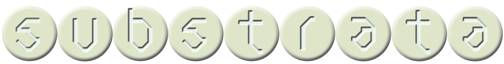
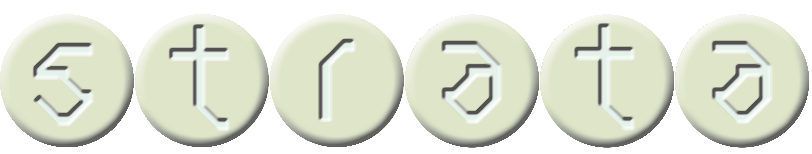

Substrata was not built — it was excavated.
Chamber by chamber, passage by passage, its founders carved meaning from earth and stone, studying systems that had long existed beneath notice: ant colonies, their density, their persistence, the way they appear precisely when absence feels most complete.
What emerged was not merely shelter, but a system. A living geometry of mutual purpose. Every resident is both cell and organism. Every corridor connects.
The Five
Laws of
the Deep
Every resident of Substrata receives the Colony Code upon entry. It is not a contract — it is a condition of breath. These laws do not govern behavior. They describe what it means to exist here.
"We did not descend because the surface failed us. We descended because we understood, finally, that the deepest connections are always the ones made underground — in the dark, in the pressure, in the shared necessity of warmth."
— Founding Charter of Substrata, Year Zero
The Colony, Mapped

The Four

Substrata is a stratified colony. Depth is not a logistic — it is a social contract. Each stratum has its own light, its own language, and its own law. To descend is to commit. There is no casual passage between worlds.
The Threshold
Entry halls, transit bays, welcome chambers. Light still filters through the grates above. The air smells of outside.
The Working Belt
Markets, workshops, residences. The hum of the colony is loudest here. No natural light penetrates this far.
The Inner Ring
Archives, nurseries, food stores. Only those with clearance descend here. Time moves differently.
The Queen's Ward
Reserved. Access is not granted — it is inherited. Those who dwell here have never seen the surface.
Who You
Will Become
Every resident of Substrata carries a function. You did not choose it — it was assigned by the Stratum Council upon intake. You will grow into it. You always do.
The Worker
Maintains passages, operates the food lines, builds new chambers. The colony moves because they move. Most residents become workers. This is not a lesser fate — it is the most essential one.
The Scout
Navigates the boundary zones. Sometimes ascends. Scouts are often quieter than other residents. They have seen things that do not translate into the language of the underground.
The Keeper
Tends the archives, the nurseries, the deep stores. When a Keeper appears in Stratum I, something important has changed.
The Elder
Governs by precedent. Inherited, not elected. Has never seen daylight. The Elders believe this makes their judgement purer — unclouded by the distractions of sky and distance.
"I stopped missing the sun after the first winter. By spring, I had forgotten that missing it was an option."
— Maren S., Stratum II resident, 15th year
A place for those
who want to go deeper
Applications are reviewed by the Stratum Council. Placement is determined by function, not preference. All residents begin in Stratum I. There is no guarantee of descent — only of belonging.
Processing time: 4–6 weeks · All decisions are final · The colony does not negotiate